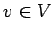

Inhalt Index DeskTop Bronstein

 Algebra und Diskrete Mathematik Klassische algebraische Strukturen Vektorräume
Algebra und Diskrete Mathematik Klassische algebraische Strukturen Vektorräume


Es sei V ein K-Vektorraum. Die Vektoren heißen linear abhängig, falls es k1, k2, gibt, die nicht alle gleich Null sind, so daß gilt, und andernfalls linear unabhängig. Lineare Abhängigkeit von Vektoren bedeutet also, daß sich ein Vektor durch die anderen darstellen läßt.
Existiert eine Maximalzahl n linear unabhängiger Vektoren in so heißt V n-dimensional. Diese Zahl n ist dann eindeutig bestimmt und heißt Dimension. Je n linear unabhängige Vektoren in V bilden eine Basis.Gibt es eine solche Maximalzahl nicht, so heißt der Vektorraum unendlichdimensional. Die Vektorräume aus den obigen Beispielen sind in der angegebenen Reihenfolge n-, - bzw. unendlichdimensional.
Aus dem Vektorraum  sind n Vektoren genau dann linear abhängig, wenn die Determinante der Matrix, die diese Vektoren als Spalten bzw. Zeilen enthält, gleich 0 ist.
sind n Vektoren genau dann linear abhängig, wenn die Determinante der Matrix, die diese Vektoren als Spalten bzw. Zeilen enthält, gleich 0 ist.
Ist eine Basis eines n-dimensionalen K-Vektorraumes, so besitzt jeder Vektor  eine eindeutige Darstellung mit
Jede Menge linear unabhängiger Vektoren eines Vektorraumes läßt sich zu einer Basis dieses Vektorraumes ergänzen.